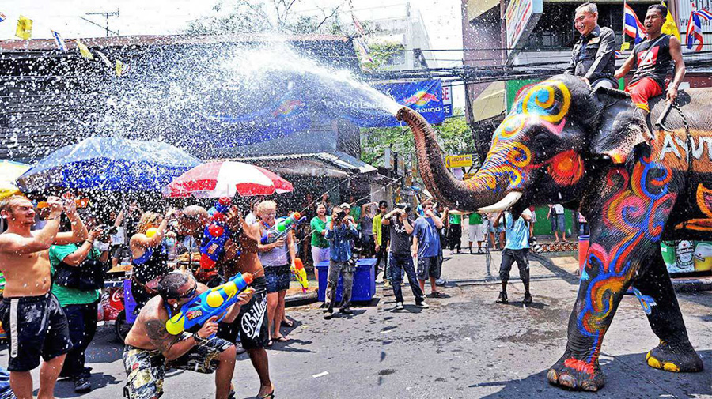
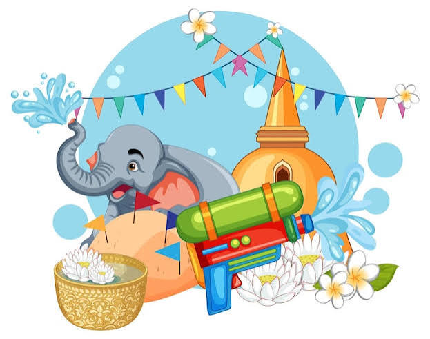

☔
NAME & NATURE
• Thailand's traditional New Year
• Marks the New Year according to the Buddhist calendar
🌊 SONGKRAN – THAILAND'S WATER FESTIVAL 🌊



📅
TIME
April 13–15
April 13–15
📍
LOCATION
• Across Thailand
• Famous in Bangkok, Chiang Mai, and Phuket
💦 WHAT DO PEOPLE DO?
• Splash water and have fun in the streets
• Visit temples and join traditional activities
• Enjoy Thai food
• Across Thailand
• Famous in Bangkok, Chiang Mai, and Phuket
💦 WHAT DO PEOPLE DO?
• Splash water and have fun in the streets
• Visit temples and join traditional activities
• Enjoy Thai food

✨
MEANING
• Water symbolizes purity
• Washes away bad luck and brings peace
• Strengthens family and community bonds
🌺 TRADITIONAL HIGHLIGHTS
Songkran is also a time for families to reunite, visit temples, show respect to elders, and celebrate a fresh beginning.
• Water symbolizes purity
• Washes away bad luck and brings peace
• Strengthens family and community bonds
🌺 TRADITIONAL HIGHLIGHTS
Songkran is also a time for families to reunite, visit temples, show respect to elders, and celebrate a fresh beginning.